7 Lab 7: Making Maps - Part I
7.1 Context
One of my favourite TV shows of all time is the series ’The Last Kingdom. I was already a fan of the books, and I think they translated it to TV very well.
One of the key plots in the show is that the main character, Uthred, wants to reclaim his birthright - the castle of Bebbanburg. Turns out this is a real castle, and it still exists today as Bamburgh Castle in Northumberland. It is a great place to visit, very scenic and right by the ocean!

So for this mapping exercise, we will create a map that could be used to guide someone wanting to visit the location, including road and train access, some context information, and a close-up aerial view of the castle. It will be fun!
This week’s exercises are essential for you to successfully complete your first summative assessment, so don’t skip it!
7.2 Guided Exercise 1 - Getting the data
We will use several datasets from the Ordnance Survey for this exercise, most of it from Digimap. To standardise the focus area, we will be downloading data covering the NU OS tile:
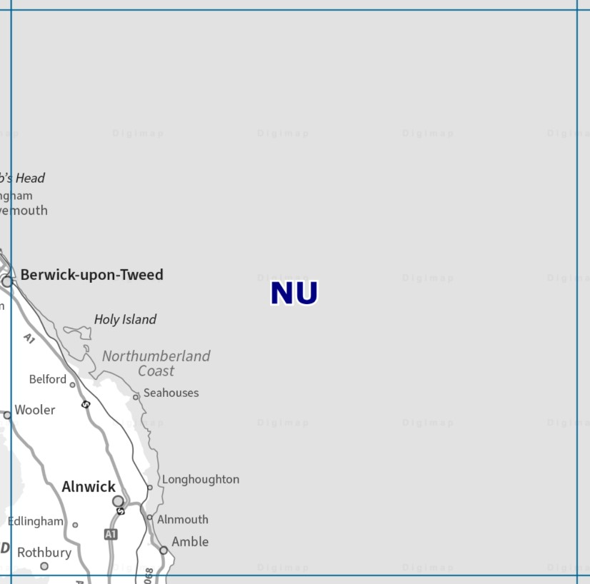
- First, grab these datasets from the
Ordnance Surveycollection on Digimap, selecting the NU tile, and usingSHPas the format if asked:
OS Terrain 50 DTM
Vector Map District
Make sure you submit the order before you continue. Digimap will not carry over your selection when you switch collections.
- Now go to the
Aerialcollection on Digimap, and grab a high-res aerial photo of the castle. To find Bamburgh, just type the name on the search box at the top of the Digimap window, and then pickBamburgh (Northumberland). From there, zoom in and then draw a selection around the castle:
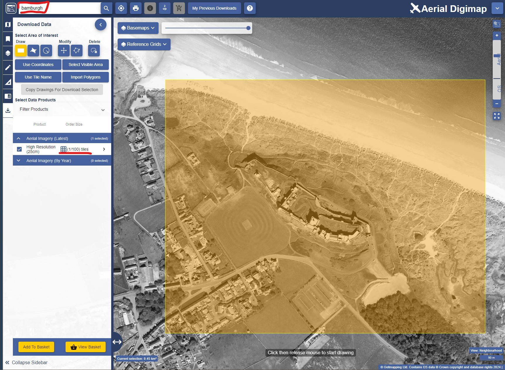
- With your selection made, you should only get one tile for the
Aerial Imagery (Latest)option. Order that tile.
Finally, we will get a nice pre-made map of the UK to use as a base map for a broader location map inset. The map is also from Ordnance Survey, but is not on Digimap, so we will grab it from the OS Open Data Hub:
- Go to the OS Open Dat Hub and find the
GB Overview Mapscollection. Click on it and download the only available file.
Okay, we should have enough data to make an informative map, so let us start laying it out.
7.3 Guided exercise 2 - Starting the project and organising data
Before we start mapping, we need to organise our downloads and set up a project to start bringing in the data. We will use the same data for this lab and the next.
- Create a home folder for this project named
labs_7_8), and then extract the zipped files and organise the data as you are used to.
What data models and file formats are your datasets on?
Create a new empty project in QGIS, name it
labs_7_8and set its CRS to OSGB (EPSG:27700). Save it.As starter, bring in the DTM tiles into the project. If you downloaded the NU region correctly, you should have 15 separate DTM tiles (files ending in
.asc). They should look like this:
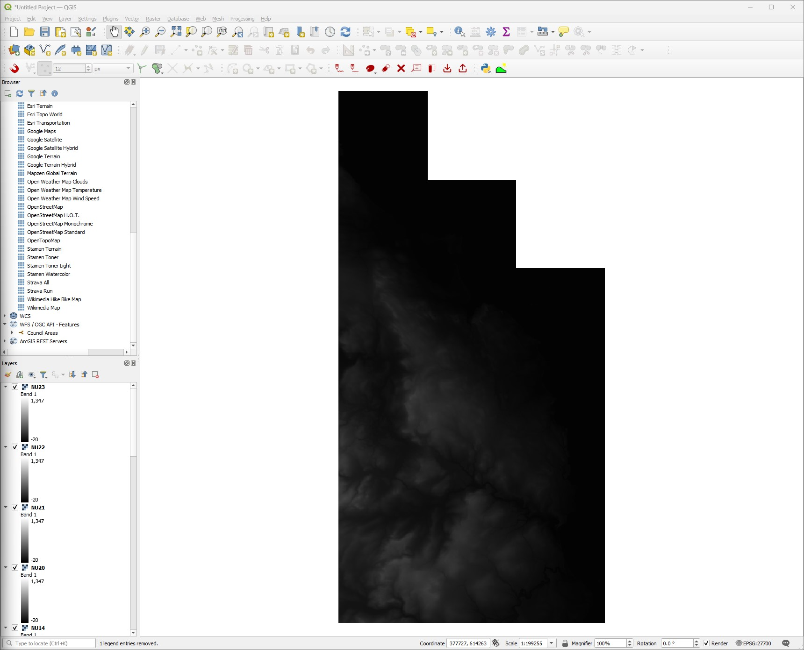
We will want to style this data, but copying and pasting the style 15 times is too cumbersome. So use your skills from last week and make a mosaic of all the DTM tiles. Save it as a new file on the proper location in your folder organization, and then remove all the individual tiles from the project to keep it ‘clean’.
Now look at the data you downloaded from the OS Vector District dataset. It should contain several shapefiles named
NU_xxxxxx.shp, wherexxxxxwill be a descriptive name for what the layer holds. You will want to bring in the layers below into your project. Don’t worry yet about how each layer looks or their ordering, just make sure you got it all.
NU_BuildingNU_ForeshoreNU_NamedPlaceNU_RailwayStationNU_RailwayTrackNU_RoadNU_SurfaceWater_AreaNU_SurfaceWater_LineNU_WoodlandNU_TidalBoundary
- Save your project, and then use the
Zoom Fulltool ( ) to see the full extent of your data. You will notice that some of the datasets go beyond the limits of the actual NU tile:
) to see the full extent of your data. You will notice that some of the datasets go beyond the limits of the actual NU tile:
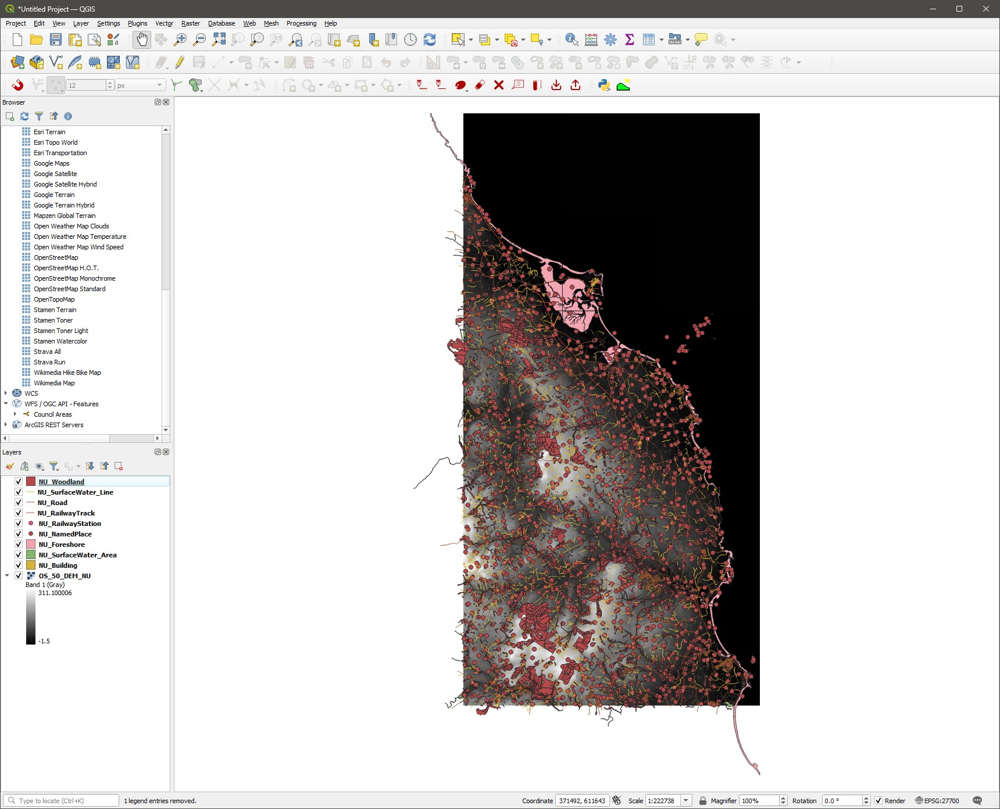
Thinking of the GIS tools you already learned, could you think of an explanation why some of the layers go beyond the NU limits despite your selection on Digimap?
- Using your skills from previous labs, create a layer extent polygon (
Vector > Research Tools > Extract Layer Extent) based on the DTM mosaic, and then use this polygon toClipall layers. As you clip and save the clipped versions, remove the original ones to avoid confusion and keep the project tidy. Once they are all clipped and neat, save your project. From now on, when I refer to any of these layers in the instructions, I will be meaning the clipped versions. You may even want to delete the originals from your folder to prevent confusion.
If you are feeling adventurous, take a look at the QGIS documentation about Batch Processing in QGIS to clip all layers in a single sweep:
https://docs.qgis.org/3.34/en/docs/user_manual/processing/batch.html
We now have all the data we need to start laying out our map. Save your project and continue.
7.4 Guided Exercise 3 - Styling the DTM
- Let us start with the DTM, as it will be the background for our main map. Turn off all the layers except for the DTM, and open the DTM
Properties > Symbology, then selectSingleband PseudocolorforRender Type.
We could pick one of the colour ramps from the drop-down menu, but we can do better. QGIS actually has several built-in colour palettes that are professionally designed to be perceptually equivalent, colour blind friendly, and so on. The two main collections of palettes are the ColorBrewer palettes and the cpt-city archive. We will use one of the topography optimised cpt-city palettes.
Cartography is an equal mix of art and technique, and always has a strong amount of subjectivity and self-expression. Throughout this exercise, feel free to explore different symbology options instead of picking the exact ones shown, to develop your own cartographic style.
Click the small down-arrow to the right of the
Color Rampbutton, and select the optionCreate New Color Ramp. On the small window that will appear, selectCatalog: cpt-cityand clickOK. A new window will appear with all the (many) cpt-city palettes.Pick the
Topographycategory on the left, and then click on thecd-apalette (or another of your choice), and thenOK. You will then be back at theSymbologywindow.Now let us customise our colour palette. First, for
MinandMax, pick0and300respectively. Continuous palettes are easier to interpret if they use nice, round values. Then change theModetoEqual Intervalwith7classes. That will give us nice round steps of 50m. ThenApplyandOK. Your DTM should now look like this:
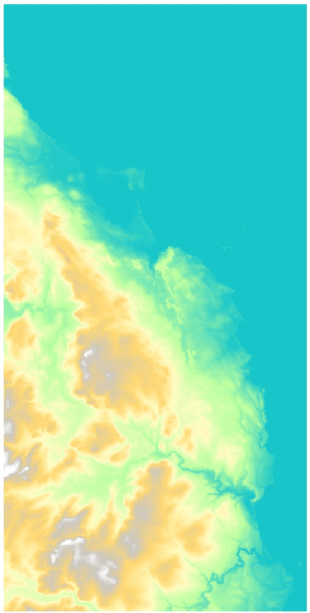
- We can add a bit more pop to the DTM by reproducing the
3Deffect using transparency andhillshadesymbology that we learned on Chapter 5. If you can’t quite remember how to do it, refer back to Guided Exercise 4 for that lab. For my map, I set the transparency of the coloured DTM layer to60%, and then went back to theSymbologyof the hillshade layer and tweaked thebrightness(20) andcontrast(-10) options under theLayer Renderingsection. We want the effect to be subtle, and the whole DTM to have a ‘light’ appearance since it will be a background:
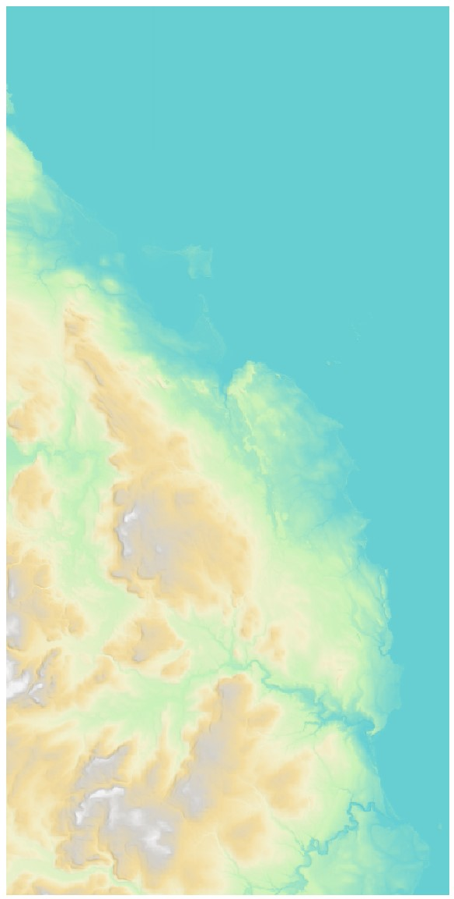
- Make any additional adjustments to the DTM style to your taste, and then save your project.
7.5 Guided Exercise 4: Adding and styling the transportation layers
Now that we have a nice-looking base layer, let us start adding our vector elements. At this time, it is a good idea to stop and think again about what the main purpose of our map is - what should the main subject be, what additional information is more important, and so on. In the end, we want to have a visual hierarchy that naturally guides the viewer attention to the most important aspects of the map. (@) Turn on the ‘railway tracks’ and ‘roads’ layers. Since one of our main objectives is to get people to reach Bamburgh Castle, these should be very evident in our map.
- Let us start with the railway track, as it is simpler. Open its
Properties > Symbologyand then change the symbol presets list fromFavoritestoAll Symbols(see figure below). Then scroll through the presets list until you findTopo Railway. Click on it to select it, and thenApply.
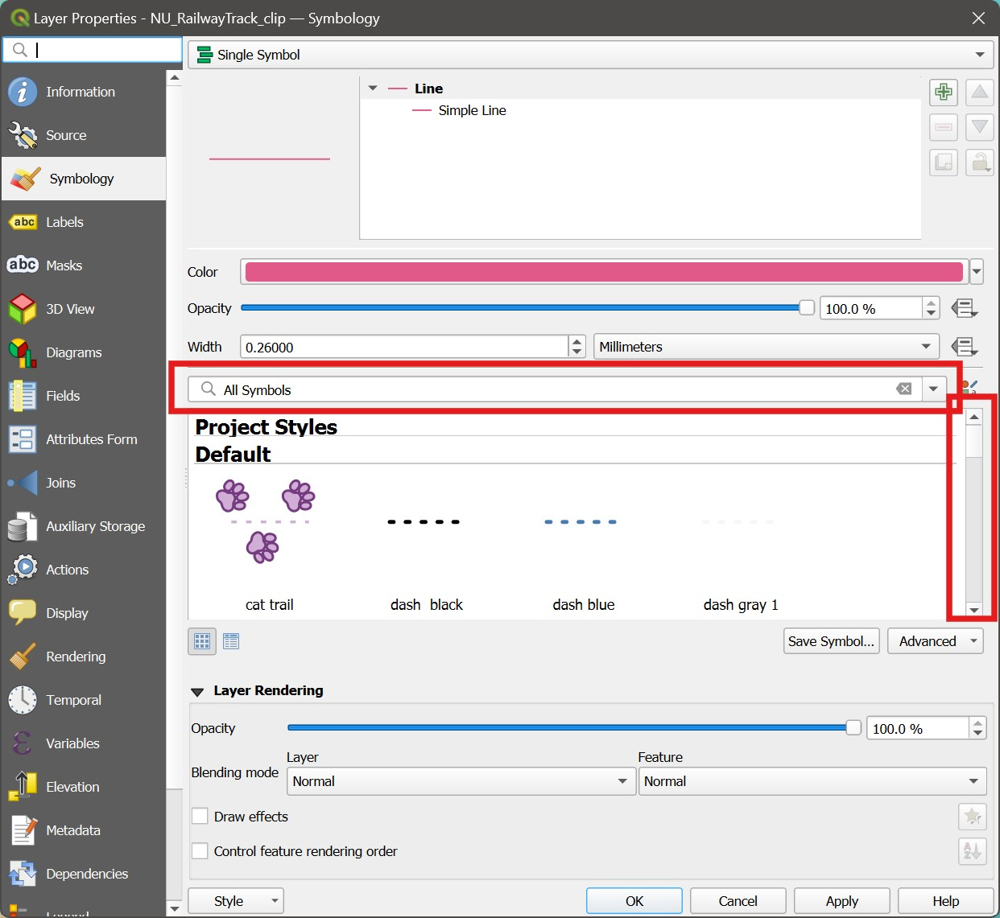
Note how QGIS allows you to create very complex symbols. If you look at the top of the Symbology window, you will notice this railway track symbol is actually composed of several ‘sub-symbols’:
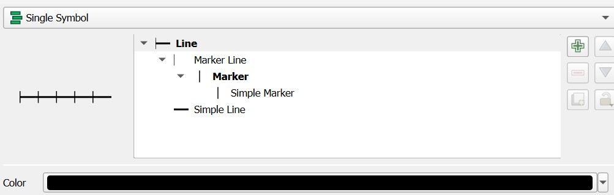
The general symbol category is Line, and then the different elements of the symbology are added to it using the green + symbol at the left. The Maker Line sub-symbol defines the type of additional symbol to overlay on the line, and how (try to change the distance between rail crosslines!). Then the Simple Marker sub-symbol defines what the symbol for the actual Marker is, which will be repeated along the line (try to make it a bit thicker!). Finally, the Simple Line sub-symbol is the one we are used to, that sets the appearance of the main track line.
You can create very complex symbols using these advanced features - but don’t feel like you need to for the purposes of this module! You can go far by just picking one of the presets and then tweaking it to your taste.
- Play with the width of the track line and the colour to make it well separated from the background terrain, but not too strong/dominating.
Did you notice the crosslines along the track seem to have inconsistent spacing? Can you think of a reason why? How could you fix it?
Now we can focus on the roads. Open the
Attribute Tableof the roads layer, and notice there is an attribute namedCLASSIFICAindicating the type of road (local street, minor road, etc.). Use theSelect by Expressiontool to investigate what are the unique possible values of this attribute. It would be nice if we could style the roads based on their type!Close the attribute table and open the
Properties > Symbologyfor the roads layer. Change it fromSingle SymboltoCategorized, then pickCLASSIFICAas theValue, andClassifyto assign random colours to each road type.
We want however, to have some consistency and visual hierarchy for the roads, instead of simply random colours. But you can edit the symbols for each road class by double clicking on each individual symbol in the list of classified values.
- Take a look at the UK roads classification and then style them with proper visual hierarchy. Colour A and B roads red, but use different widths for each, and then style the remaining roads dark grey, but again with hierarchy indicated by line width. Feel free to use the same symbol for classes you think are too similar (I used the same symbol for the two types of
primary road, and I removed the symbols for pedestrianized and private roads). This is what my map looks like by now:
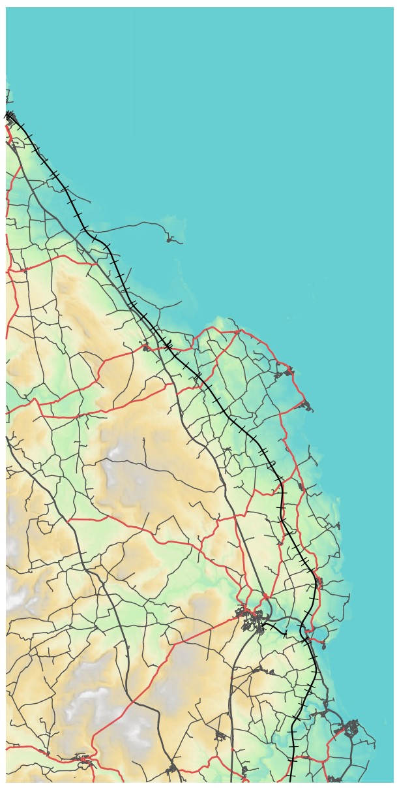
Now that we have our main roads, let us add some more context to the map. But first save your project!
7.6 Guided Exercise 5 - Adding contextual elements
Even with the roads and railways clearly visible in the map, it would still be difficult to navigate using this map, as there isn’t much context available. Let us add some contextual elements to support the main themes -meaning they should not stand out more than necessary.
- Reactivate the woodland, surface water (area and line) and buildings layers. Notice how cluttered the map looks now. This is why good visual hierarchy is so important.
We can start by styling the water surfaces. We want colours that help interpretation, so we should make them a light-coloured blue. And since many of these features are small and/or narrow features, we can make them look less evident and cluttered by setting the stroke symbol to be the same colour as the fill symbol (i.e. so that they look borderless).
- Open the
Properties > Symbologyof the surface water lines, and set theSimple LineColorto a light blue of your choosing. Leave it as a thin line. Before you leave theSymbologywindow for that layer, open the colour picking window again and copy theHTML notationfor the colour you selected:
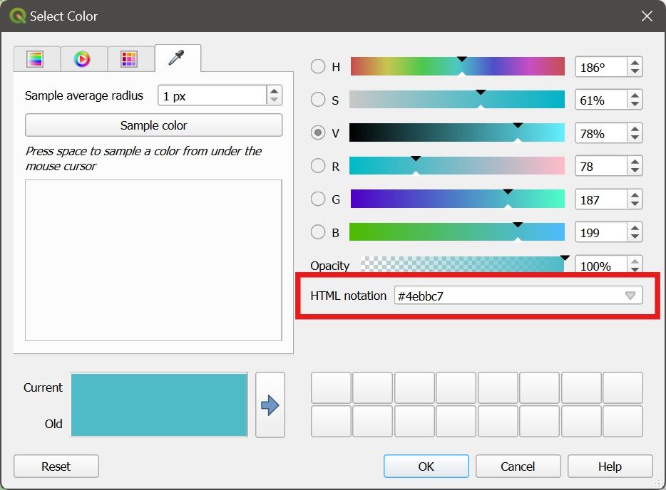
Now close the window and open the
Symbologyfor the surface water areas. Then withinSimple Fillopen the colour picking window for theFill coloroption and paste theHTML notationyou copied before. Then repeat it for theStroke Colorso they will all have the same colour.Now style the woodlands using a muted green colour, and the buildings using a brownish grey. Make them both borderless, as you did with the surface water areas. Save your project.
7.7 Guided Exercise 6: Deciding on the framing and scale, and adding some finishing touches
We are getting close to a complete map, and it seems now it is a good time to decide on our framing and scale. We want to find a good balance between showing enough of the surroundings without overwhelming the map user. We also need to take into consideration what will be the final format of our map. Let us assume we will deliver it in A4 size, landscape orientation.
- Go to
Project > New Print Layout, and create a new layout calledbamburgh_map. Then in the new Layout Editor window use theAdd Map( ) tool to add your map to the page. Leave some room at the right side for the legend and annotations:
) tool to add your map to the page. Leave some room at the right side for the legend and annotations:
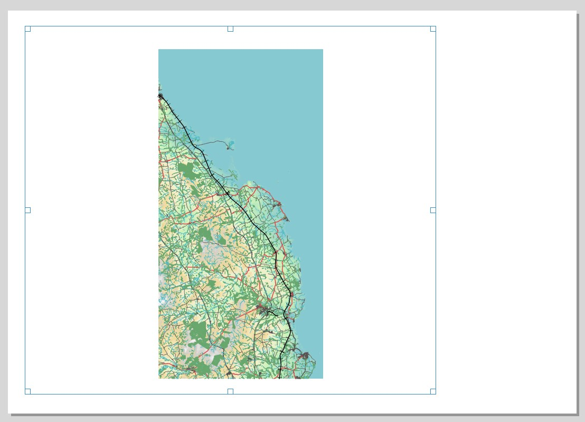
- Now switch to the
Move item content( ) tool, and zoom in and drag the map around, testing how to best use the space.
) tool, and zoom in and drag the map around, testing how to best use the space.
Once you find a framing and scale that you are happy with, it is a good idea to slightly change the scale so it is a nice, round number. In my case, I ended up with a map scale of 1:82011, and so I will round it to 80000. Once I have settled on this scale, I want to then fix it, to prevent accidental zooming later:
- Click on the menu-looking button to the right of the scale number box, and then on
Edit(see figure below). The familiar expression window will appear. Then just type80000(or whatever scale you decided to use) and clickOK. The menu-looking button now changed to a yellow \(\epsilon\), to indicate the value is set by an expression.
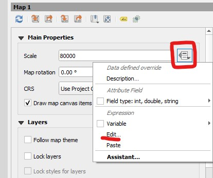
This is my final framing and scale:
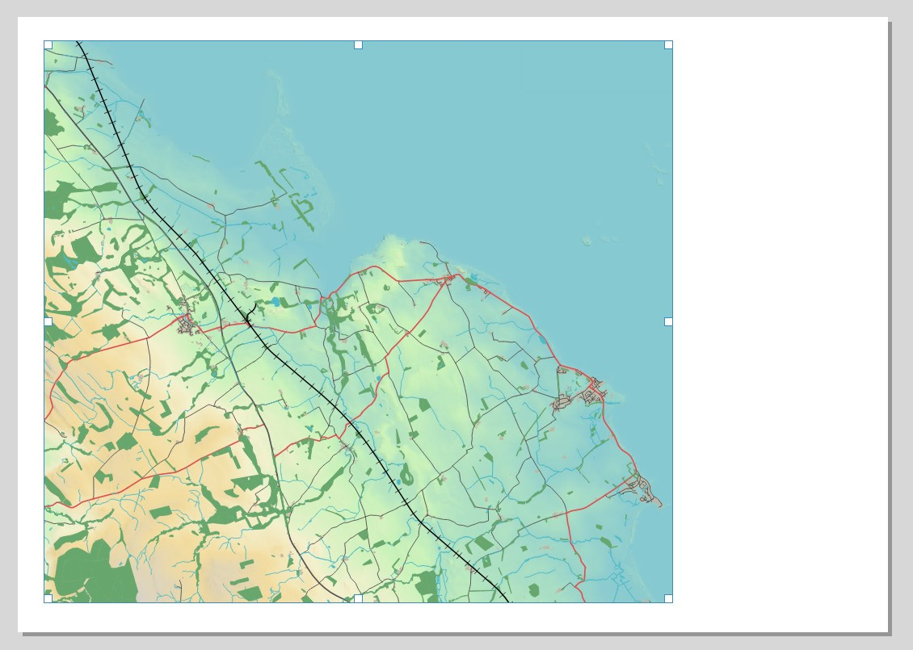
Before we finish for today, let us tweak the appearance of the shoreline a bit. As it is now, it looks very undefined and may be confusing to your map users.
Back on the main QGIS window, activate the
NU_TidalBoundaryandNU_Foreshorelayers. Copy and paste the style of the Surface Water Line layer to the Tidal Boundary, and then open itsProperties > Symbology, and make it a bit darker so it stands out from the background. Before you close the window, copy theHTML notationof the colour you picked.Now enable the Foreshore layer, and open its
Properties > Symbology. Within theSimpe Fillsub-symbol, change both theFill colorandStroke colorto the colour you copied from the step above, and change theFill stylefromSolidtoDense 6. ClickOK. You should obtain an effect similar to the image below.
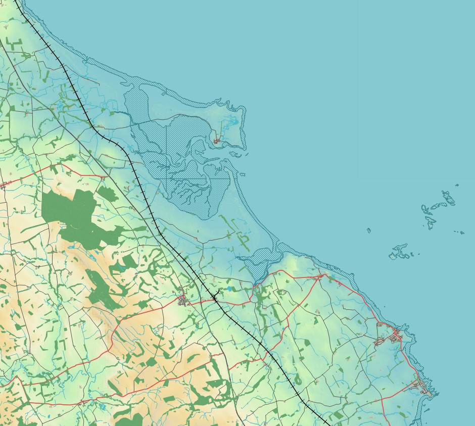
Can you fix the ugly vertical and horizontal lines that are appearing on the foreshore area shown above?
Before we finish our session for today, one last thing to consider is the ordering of the layers you have. To facilitate map reading, they should overlap in a logical order - for example, roads should cross over rivers, and railways should cross over both. Rearrange your layers so they are in the order below:
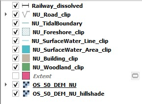
- We will continue working on our map on the next lab, so make sure you 1) Save your project and 2) Copy the entire Lab 7 folder to your OneDrive or an external drive (if you are working locally). You may want to zip the entire folder to make it smaller and more portable/manageable.
Good job so far! We will pick up exactly where we left in the next session. If you finished this lab early and you are having a good time, feel free to get started with Lab 8!